A Stack is a linear data structure in which insertion and removal of elements happen at the same end, known as the TOP of the stack.
A stack follows the LIFO (Last In, First Out) principle: the last element inserted is the first element removed.
In this guide, we will cover stack fundamentals, internal memory representation, array-based and linked-list-based implementations, Java collections, algorithms, real-world applications, complexity analysis, SVG diagrams, and interactive animations.
Consider a stack of plates. You place a new plate on top of the existing plates, and when you need a plate, you remove the topmost one first.
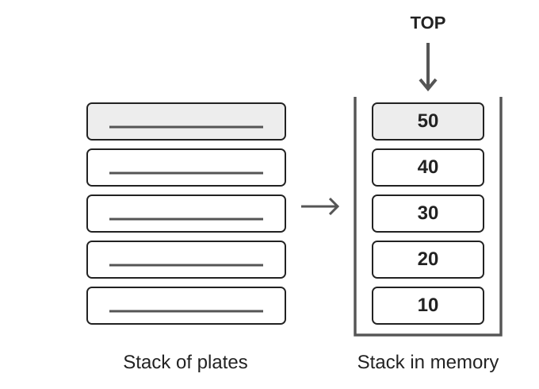
The element 50 was inserted last and will be removed first.
For example, if we insert elements in the following order:
Insertion order: 10 → 20 → 30 → 40 → 50
Removal order: 50 → 40 → 30 → 20 → 10A stack is an Abstract Data Type (ADT). It defines how elements are accessed and manipulated, rather than specifying how they must be physically stored in memory.
A stack can be implemented using an array, dynamic array, linked list, or even queues.
| Operation | Description | Time complexity* |
|---|---|---|
push(x) | Inserts an element at the top | O(1) |
pop() | Removes and returns the top element | O(1) |
peek() | Returns the top element without removing it | O(1) |
isEmpty() | Checks whether the stack is empty | O(1) |
isFull() | Checks capacity of a bounded stack | O(1) |
size() | Returns the number of elements | O(1) |
clear() | Removes all elements | O(n) |
search(x) | Searches for an element | O(n) |
*For typical implementations, with a maintained size counter. Dynamic-array push is amortized O(1), with occasional O(n) resizing.
Interactive stack animation
Use the controls below to insert, remove, and inspect elements. Notice how all insertions and removals take place at the same end.
Size
Top index
Top value
Capacity: 6 elements
Push operation
The push() operation adds an element to the top of the stack.
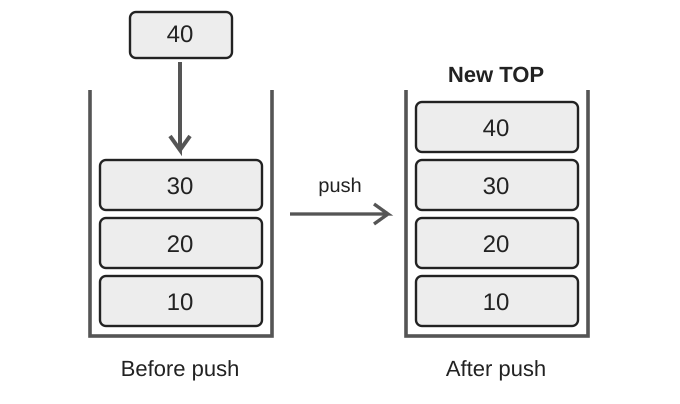
Algorithm for an array-based stack:
PUSH(value):
if top == capacity - 1:
throw StackOverflow
top = top + 1
array[top] = valuePop operation
The pop() operation removes and returns the top element.
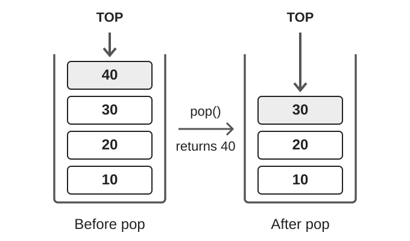
POP():
if top == -1:
throw StackUnderflow
value = array[top]
top = top - 1
return valuePeek operation
Unlike pop(), peek() does not modify the stack.
PEEK():
if top == -1:
throw StackUnderflow
return array[top]For a stack containing [10, 20, 30] from bottom to top:
| Operation | Return value | Stack afterwards |
|---|---|---|
peek() | 30 | [10, 20, 30] |
peek() | 30 | [10, 20, 30] |
pop() | 30 | [10, 20] |
peek() | 20 | [10, 20] |
pop() | 20 | [10] |
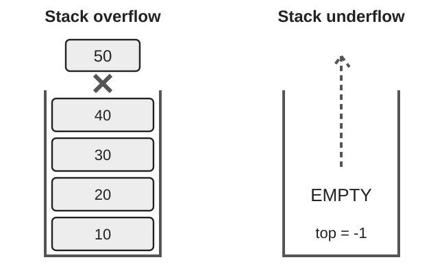
In Java, a call-stack overflow caused by excessive recursion results in StackOverflowError. This is different from exceeding the capacity of a custom stack data structure, for which we can define our own exception behavior.
There are three primary implementations:
| Implementation | Storage | Capacity |
|---|---|---|
| Array | Indexed array slots | Fixed |
| Dynamic array | Resizable array | Dynamic |
| Linked list | Individually allocated nodes | Dynamic |
Array-based stack
An array-based stack maintains a variable called top, which stores the index of the topmost element.
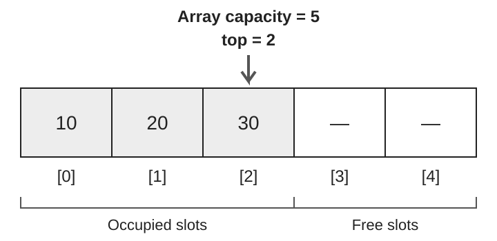
Size = top + 1 = 3. Capacity = 5.
Important conditions:
top == -1 Stack is empty
top == capacity - 1 Stack is full
top + 1 Number of elements
array[top] Topmost element, if nonemptyComplete generic implementation in Java
public class ArrayStack<T> {
private Object[] elements;
private int top = -1;
public ArrayStack(int capacity) {
if (capacity <= 0) {
throw new IllegalArgumentException("Capacity must be positive");
}
elements = new Object[capacity];
}
public void push(T value) {
Objects.requireNonNull(value);
if (isFull()) {
throw new IllegalStateException("Stack overflow");
}
elements[++top] = value;
}
@SuppressWarnings("unchecked")
public T pop() {
if (isEmpty()) {
throw new NoSuchElementException("Stack underflow");
}
T value = (T) elements[top];
elements[top] = null;
top--;
return value;
}
@SuppressWarnings("unchecked")
public T peek() {
if (isEmpty()) {
throw new NoSuchElementException("Stack is empty");
}
return (T) elements[top];
}
public boolean isEmpty() {
return top == -1;
}
public boolean isFull() {
return top == elements.length - 1;
}
public int size() {
return top + 1;
}
public void clear() {
while (!isEmpty()) {
pop();
}
}
}Usage:
void main(String[] args) {
ArrayStack<Integer> stack = new ArrayStack<>(5);
stack.push(10);
stack.push(20);
stack.push(30);
System.out.println(stack.peek()); 30
System.out.println(stack.pop()); 30
System.out.println(stack.size()); 2
System.out.println(stack.isEmpty()); false
}Why do we set elements[top] = null?
If we only decrement top, the removed object may still be referenced by the underlying array. This could prevent the garbage collector from reclaiming it.
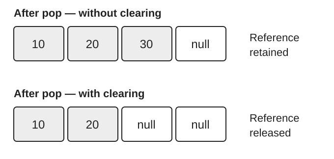
This issue is sometimes called object loitering. Clearing the reference allows the object to become eligible for garbage collection, provided no other references exist.
Dynamic array-based stack
The disadvantage of a fixed-size array is that its capacity cannot change.
A dynamic stack solves this problem by allocating a larger array whenever the current one becomes full.
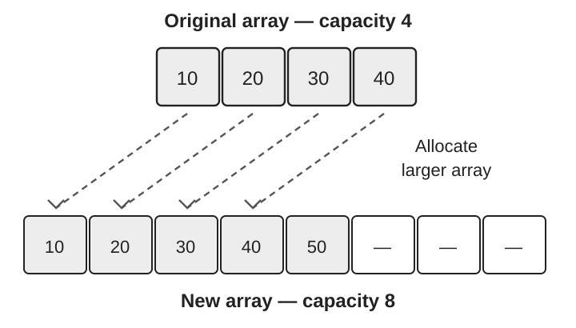
Allocate → copy existing elements → insert the new element.
To convert the previous implementation into a dynamic stack, remove final from the elements field and replace the push() method:
Inside ArrayStack<T>
private Object[] elements;
public void push(T value) {
Objects.requireNonNull(value);
if (isFull()) {
resize();
}
elements[++top] = value;
}
private void resize() {
int newCapacity = Math.multiplyExact(elements.length, 2);
elements = Arrays.copyOf(elements, newCapacity);
}Why is push amortized O(1)?
Consider inserting nine elements into a stack with an initial capacity of two.
| Insertion | Capacity | Existing elements copied |
|---|---|---|
| 1–2 | 2 | 0 |
| 3 | 4 | 2 |
| 4 | 4 | 0 |
| 5 | 8 | 4 |
| 6–8 | 8 | 0 |
| 9 | 16 | 8 |
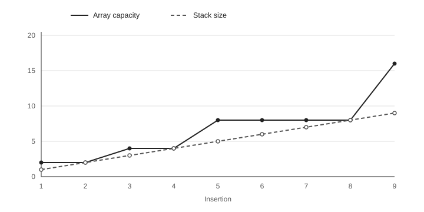
Although an individual resizing operation takes O(n), resizing happens infrequently.
The total number of elements copied over n insertions is bounded by a geometric series:
1+2+4+8+cdots < 2n
Therefore:
Linked-list-based stack
Instead of an array, we can use a singly linked list.
Each node contains a value and a reference to the next node. The head of the linked list represents the top of the stack.
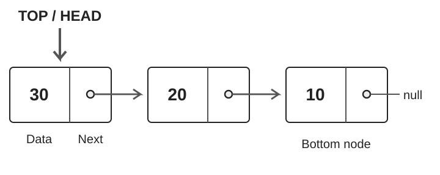
Nodes do not need to occupy contiguous memory locations.
Internal working of push and pop
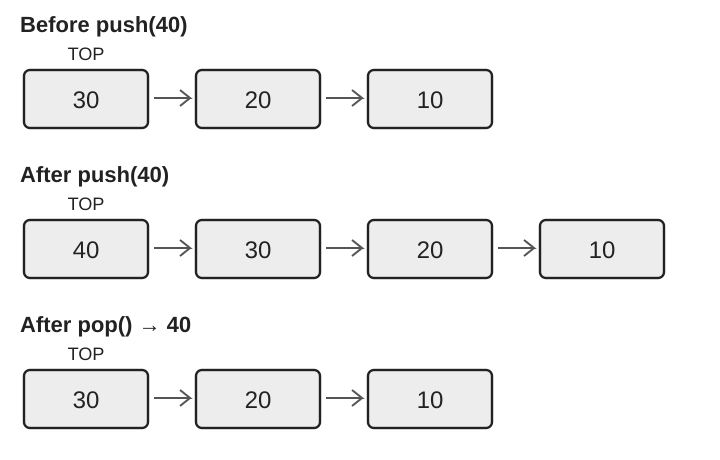
Push does not traverse the linked list. It simply points the new node to the previous head.
Pop changes the head reference to the next node.
Complete Java implementation
public class LinkedStack<T> {
private static class Node<T> {
T value;
Node<T> next;
Node(T value, Node<T> next) {
this.value = value;
this.next = next;
}
}
private Node<T> top;
private int size;
public void push(T value) {
top = new Node<>(Objects.requireNonNull(value), top);
size++;
}
public T pop() {
if (isEmpty()) {
throw new NoSuchElementException("Stack underflow");
}
T value = top.value;
top = top.next;
size--;
return value;
}
public T peek() {
if (isEmpty()) {
throw new NoSuchElementException("Stack is empty");
}
return top.value;
}
public boolean isEmpty() {
return top == null;
}
public int size() {
return size;
}
public void clear() {
top = null;
size = 0;
}
}Linked-list stacks do not require resizing. However, each element requires an additional node object and a reference to the next node.
The array implementation generally has better CPU cache locality, while the linked-list implementation avoids occasional array-copying costs.
Java provides multiple classes that can be used as a stack.
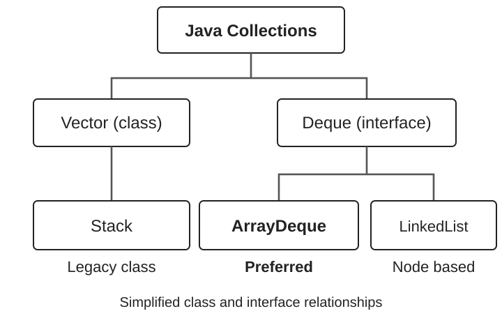
Using java.util.Stack
void main(String[] args) {
Stack<Integer> stack = new Stack<>();
stack.push(10);
stack.push(20);
stack.push(30);
System.out.println(stack); [10, 20, 30]
System.out.println(stack.peek()); 30
System.out.println(stack.search(10)); 3
System.out.println(stack.pop()); 30
System.out.println(stack.size()); 2
System.out.println(stack.empty()); false
}The search() method returns the 1-based position relative to the top, or -1 if the element is not found.
Using ArrayDeque (recommended)
void main(String[] args) {
Deque<Integer> stack = new ArrayDeque<>();
stack.push(10);
stack.push(20);
stack.push(30);
System.out.println(stack); [30, 20, 10]
System.out.println(stack.peek()); 30
System.out.println(stack.pop()); 30
System.out.println(stack.size()); 2
}ArrayDeque is implemented using a resizable circular array. When used as a stack, both insertion and removal occur at the front of the deque.
| Stack operation | Equivalent Deque operation |
|---|---|
push(x) | addFirst(x) |
pop() | removeFirst() |
peek() | peekFirst() |
size() | size() |
isEmpty() | isEmpty() |
ArrayDeque does not permit null elements. Its pop() throws NoSuchElementException when empty, whereas pollFirst() and peek() return null.
Stack vs ArrayDeque vs LinkedList
| Feature | Stack | ArrayDeque | LinkedList |
|---|---|---|---|
| Internal structure | Dynamic array | Circular array | Doubly linked list |
| Push | Amortized O(1) | Amortized O(1) | O(1) |
| Pop | O(1) | O(1) | O(1) |
| Thread-safe | Individual methods | No | No |
| Null elements | Allowed | Not allowed | Allowed |
| Memory overhead | Moderate | Low | Higher |
| Cache locality | Good | Good | Poorer |
| Recommended for general stack usage | No | Yes | Situational |
For ordinary single-threaded Java applications, prefer:
Deque<T> stack = new ArrayDeque<>();| Application | What the stack stores |
|---|---|
| Function calls | Method frames |
| Recursion | Pending recursive calls |
| Text editor undo/redo | Previous states or commands |
| Browser history | Previously visited pages |
| Compilers | Operators, operands, parser state |
| Expression evaluation | Intermediate results |
| Depth-first search | Pending vertices or traversal frames |
| Backtracking | Previous decisions |
| Syntax validation | Unmatched opening brackets |
| Virtual machines | Operands and intermediate values |
| Stock span | Indices of previous prices |
| Histogram algorithms | Indices of bars |
Every JVM thread has its own logical call stack. When a method is invoked, a new stack frame is created.
A stack frame conceptually contains local variables, an operand stack, and information needed for returning from the method or handling exceptions.
Consider the following recursive factorial function:
public class RecursionExample {
static int factorial(int n) {
if (n < 0) {
throw new IllegalArgumentException();
}
if (n <= 1) {
return 1;
}
return n * factorial(n - 1);
}
public static void main(String[] args) {
System.out.println(factorial(4)); 24
}
}Interactive call stack visualization
During recursion, frames accumulate on the call stack. During returning, the frames are removed in reverse order.
Recursive vs iterative implementation
static int factorialIterative(int n) {
if (n < 0) {
throw new IllegalArgumentException();
}
int result = 1;
for (int i = 2; i <= n; i++) {
result *= i;
}
return result;
}| Complexity | Recursive | Iterative |
|---|---|---|
| Time | O(n) | O(n) |
| Auxiliary space | O(n) | O(1) |
| Uses recursive call frames | Yes | No |
| Risk of excessive call depth | Yes | No |
Both examples use Java’s int, which cannot represent factorial results beyond 12!. Use BigInteger for larger exact results.
Reversing a string
Because a stack follows LIFO, inserting elements and subsequently removing them reverses their order.
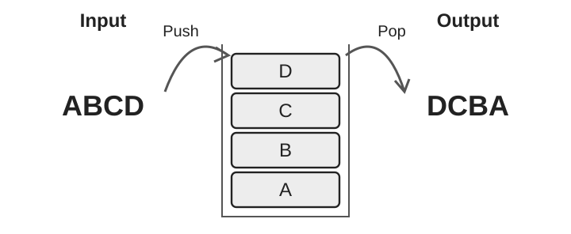
static String reverse(String input) {
Deque<Integer> stack = new ArrayDeque<>();
input.codePoints().forEach(stack::push);
StringBuilder result = new StringBuilder();
while (!stack.isEmpty()) {
result.appendCodePoint(stack.pop());
}
return result.toString();
}
reverse("HELLO") → "OLLEH"This reverses Unicode code points, not necessarily entire user-perceived characters such as combined emoji.
Time: O(n) | Auxiliary space: O(n)
Balanced parentheses
Given an expression containing parentheses, square brackets and curly braces, determine whether every opening bracket has a matching closing bracket in the correct order.
{[()]} → Valid
([]{}) → Valid
([)] → Invalid
(( → InvalidAlgorithm:
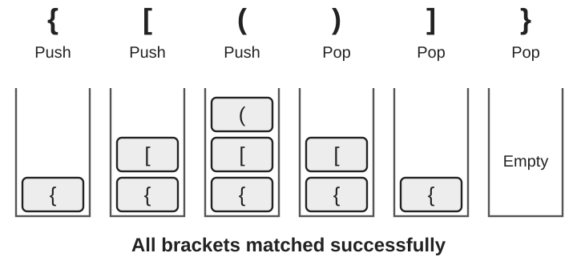
static boolean isBalanced(String expression) {
Deque<Character> stack = new ArrayDeque<>();
for (char c : expression.toCharArray()) {
switch (c) {
case '(', '[', '{' -> stack.push(c);
case ')', ']', '}' -> {
if (stack.isEmpty()) {
return false;
}
char opening = stack.pop();
if ((c == ')' && opening != '(') || (c == ']' && opening != '[') || (c == '}' && opening != '{')) {
return false;
}
}
default -> {
Ignore non-bracket characters
}
}
}
return stack.isEmpty();
}Time: O(n) | Auxiliary space: O(n)
Postfix expression evaluation
Arithmetic expressions can be represented in three forms.
| Notation | Example |
|---|---|
| Infix | (5 + 3) * 2 |
| Prefix | * + 5 3 2 |
| Postfix | 5 3 + 2 * |
A postfix expression can be evaluated using a single stack without needing parentheses or operator precedence rules during evaluation.
Java implementation:
static int evaluatePostfix(String expression) {
Deque<Integer> stack = new ArrayDeque<>();
for (String token : expression.trim().split("\\s+")) {
if (token.matches("-?\\d+")) {
stack.push(Integer.parseInt(token));
} else {
if (stack.size() < 2) {
throw new IllegalArgumentException("Missing operands");
}
int right = stack.pop();
int left = stack.pop();
int result = switch (token) {
case "+" -> Math.addExact(left, right);
case "-" -> Math.subtractExact(left, right);
case "*" -> Math.multiplyExact(left, right);
case "/" -> {
if (left == Integer.MIN_VALUE && right == -1) {
throw new ArithmeticException("Integer overflow");
}
yield left / right;
}
default -> throw new IllegalArgumentException("Unknown operator: " + token);
};
stack.push(result);
}
}
if (stack.size() != 1) {
throw new IllegalArgumentException("Invalid expression");
}
return stack.pop();
}evaluatePostfix("5 3 + 2 *"); 16
evaluatePostfix("10 2 - 3 *"); 24
evaluatePostfix("20 5 /"); 4The order in which operands are popped is important. For subtraction and division, the first popped value is the right operand, not the left.
Time: O(n) | Auxiliary space: O(n)
The reverse approach can evaluate prefix notation by scanning from right to left. To convert infix notation to postfix notation, we can use the shunting-yard algorithm, which maintains a separate stack for operators.
A monotonic stack is a stack that maintains its elements in either increasing or decreasing order.
Unlike an ordinary stack, a monotonic stack removes elements that violate its ordering condition before inserting a new element.
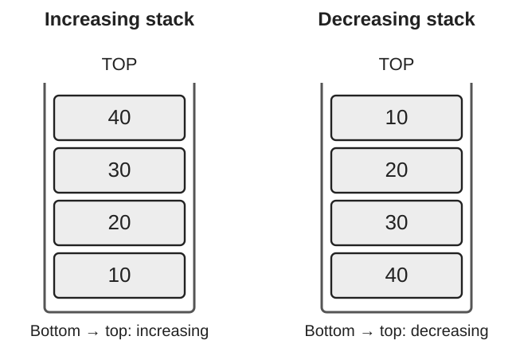
Monotonic stacks are particularly useful for solving next greater element, next smaller element, stock span, daily temperatures and largest rectangle in a histogram problems.
Next greater element
For every element in an array, find the first element to its right that is strictly greater than it.
Input: [4, 5, 2, 10, 8]
Output: [5, 10, 10, -1, -1]Here, -1 represents the absence of a greater element.
Stack entries are shown as index : value. The rightmost entry is the top.
Java implementation
public class NextGreaterElement {
public static int[] find(int[] nums) {
int[] result = new int[nums.length];
Arrays.fill(result, -1);
Deque<Integer> stack = new ArrayDeque<>();
for (int i = 0; i < nums.length; i++) {
while (!stack.isEmpty() && nums[i] > nums[stack.peek()]) {
int index = stack.pop();
result[index] = nums[i];
}
stack.push(i);
}
return result;
}
public static void main(String[] args) {
int[] nums = {4, 5, 2, 10, 8};
System.out.println(Arrays.toString(find(nums)));
}
}Output:
[5, 10, 10, -1, -1]Why is this O(n) despite the nested while loop?
Every array index is pushed at most once and popped at most once.
Therefore, at most n push operations and n pop operations occur across the entire algorithm.
| Approach | Time complexity | Auxiliary space |
|---|---|---|
| Nested loop (brute force) | O(n²) | O(1) |
| Monotonic stack | O(n) | O(n) |
The output array is excluded from auxiliary space in this comparison.
A Min Stack is a specialized stack that supports retrieving the minimum element without traversing the entire stack.
It supports push(), pop(), peek() and getMin() in constant time, amortized for push when implemented using dynamic arrays.
Using two stacks
Maintain one stack for values and another stack for the minimum value at each depth.
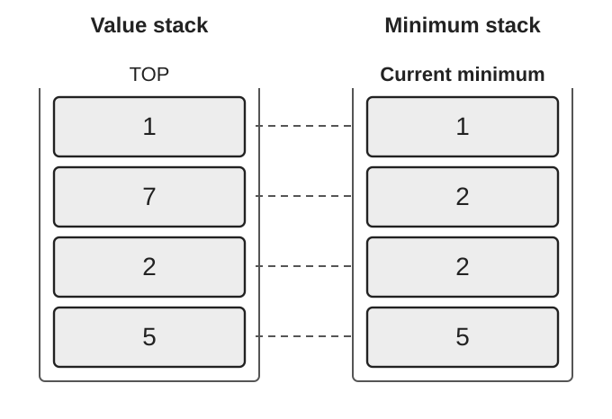
After removing 1 from both stacks, the minimum automatically becomes 2.
public class MinStack {
private Deque<Integer> values = new ArrayDeque<>();
private Deque<Integer> minimums = new ArrayDeque<>();
public void push(int value) {
values.push(value);
if (minimums.isEmpty()) {
minimums.push(value);
} else {
minimums.push(Math.min(value, minimums.peek()));
}
}
public int pop() {
int value = values.pop();
minimums.pop();
return value;
}
public int peek() {
return values.getFirst();
}
public int getMin() {
return minimums.getFirst();
}
public boolean isEmpty() {
return values.isEmpty();
}
}MinStack stack = new MinStack();
stack.push(5);
stack.push(2);
stack.push(7);
stack.push(1);
System.out.println(stack.getMin()); 1
stack.pop();
System.out.println(stack.getMin()); 2Space complexity: O(n).
Applications such as text editors, drawing applications and IDEs can implement undo and redo using two stacks.
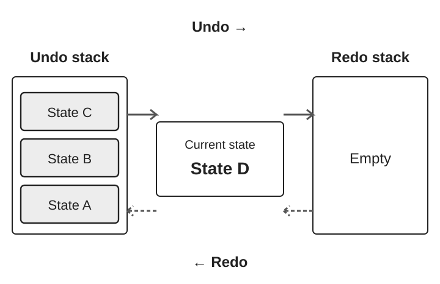
public class TextEditor {
private String text = "";
private Deque<String> undoStack = new ArrayDeque<>();
private Deque<String> redoStack = new ArrayDeque<>();
public void write(String newText) {
Objects.requireNonNull(newText);
undoStack.push(text);
text = newText;
redoStack.clear();
}
public void undo() {
if (undoStack.isEmpty()) {
return;
}
redoStack.push(text);
text = undoStack.pop();
}
public void redo() {
if (redoStack.isEmpty()) {
return;
}
undoStack.push(text);
text = redoStack.pop();
}
public String getText() {
return text;
}
}TextEditor editor = new TextEditor();
editor.write("Hello");
editor.write("Hello World");
editor.write("Hello World Java");
editor.undo();
System.out.println(editor.getText()); Hello World
editor.undo();
System.out.println(editor.getText()); Hello
editor.redo();
System.out.println(editor.getText()); Hello WorldReal-world editors often store commands, inverse operations or changes instead of copying the complete document for every edit. This is closely related to the Command and Memento design patterns.
Depth-first search (DFS) can be implemented using recursion or an explicit stack.
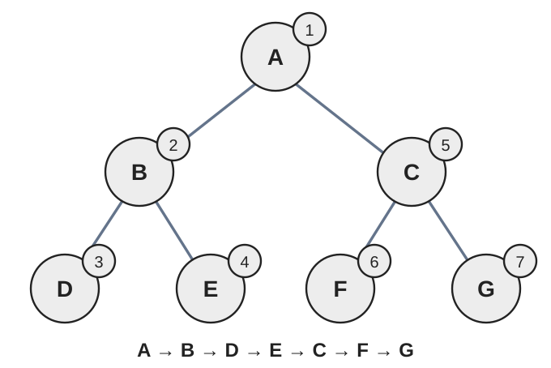
One possible DFS traversal using a stack.
static void dfs(List<List<Integer>> graph, int start) {
boolean[] visited = new boolean[graph.size()];
Deque<Integer> stack = new ArrayDeque<>();
stack.push(start);
visited[start] = true;
while (!stack.isEmpty()) {
int vertex = stack.pop();
System.out.println(vertex);
List<Integer> neighbors = graph.get(vertex);
for (int i = neighbors.size() - 1; i >= 0; i--) {
int neighbor = neighbors.get(i);
if (!visited[neighbor]) {
visited[neighbor] = true;
stack.push(neighbor);
}
}
}
}The reverse iteration makes the leftmost listed neighbor get processed first among newly pushed neighbors.
For general graphs, marking vertices when pushed prevents duplicate entries but can produce a different traversal order from recursive DFS. To reproduce exact recursive entry and exit semantics, use a stack of traversal frames or iterators.
Time complexity: O(V + E).
Auxiliary space: O(V).
A stack can also be used as a building block for other data structures.
A queue follows FIFO (First In, First Out), while a stack follows LIFO. By reversing the order twice, two stacks can implement a queue.
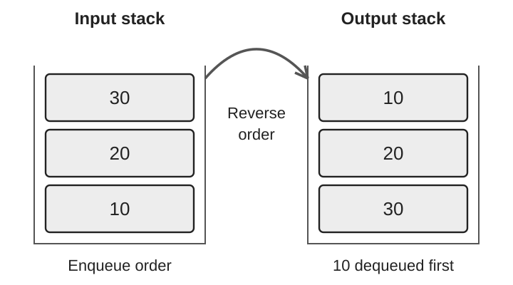
Input stack before transfer and output stack after transfer.
public class StackQueue<T> {
private Deque<T> input = new ArrayDeque<>();
private Deque<T> output = new ArrayDeque<>();
public void enqueue(T value) {
input.push(value);
}
public T dequeue() {
if (output.isEmpty()) {
while (!input.isEmpty()) {
output.push(input.pop());
}
}
return output.pop();
}
public boolean isEmpty() {
return input.isEmpty() && output.isEmpty();
}
}Transfer elements only when the output stack is empty. This ensures every element is transferred at most once.
Enqueue and dequeue have amortized O(1) time complexity.
The custom array and linked-list implementations discussed earlier are not thread-safe.
For example, consider two threads simultaneously executing pop().
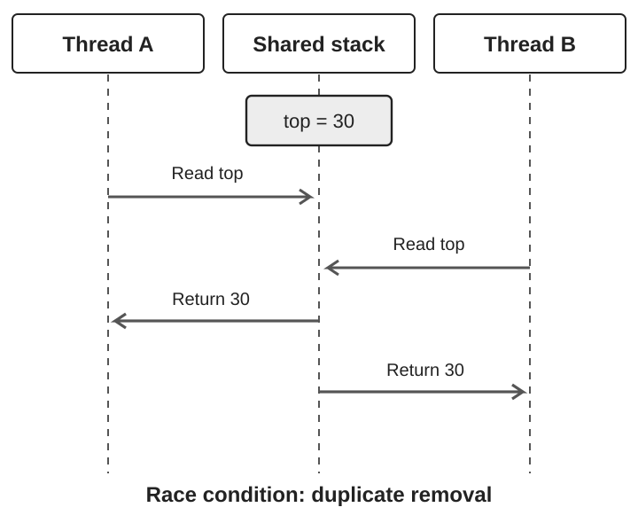
Both threads may read the same top element before either thread completes the update.
Using ConcurrentLinkedDeque
Java provides a thread-safe concurrent deque.
Deque<Integer> stack = new ConcurrentLinkedDeque<>();
stack.push(10);
stack.push(20);
stack.push(30);
Integer value = stack.pollFirst();Using pollFirst() is preferable to performing separate isEmpty() and pop() calls when removing an element concurrently.
Implementing a lock-free stack using CAS
The Treiber Stack is a classic lock-free stack based on Compare-And-Set (CAS).
public class LockFreeStack<T> {
private record Node<T>(T value, Node<T> next) {}
private AtomicReference<Node<T>> top = new AtomicReference<>();
public void push(T value) {
Objects.requireNonNull(value);
Node<T> oldTop;
Node<T> newTop;
do {
oldTop = top.get();
newTop = new Node<>(value, oldTop);
} while (!top.compareAndSet(oldTop, newTop));
}
public T pop() {
Node<T> oldTop;
do {
oldTop = top.get();
if (oldTop == null) {
return null;
}
} while (!top.compareAndSet(oldTop, oldTop.next()));
return oldTop.value();
}
public T peek() {
Node<T> node = top.get();
return node == null ? null : node.value();
}
}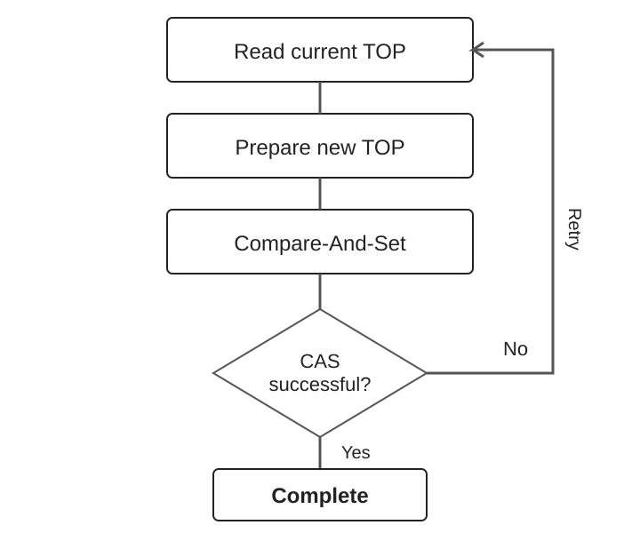
CAS changes the top reference only if it still matches the reference previously read by the thread. Otherwise, the thread retries.
This implementation does not use synchronized, explicit locks, wait() or notify().
It is lock-free, but not wait-free: system-wide progress is guaranteed by the algorithm, but an individual thread may repeatedly fail under contention. Individual operation time is therefore not necessarily O(1) under contention.
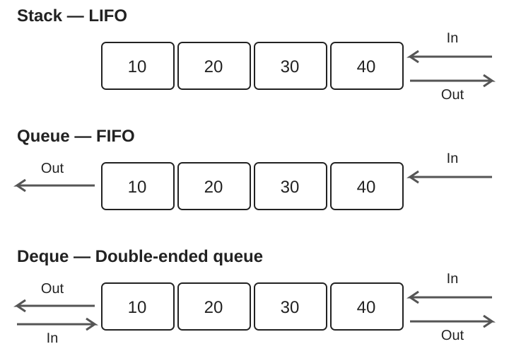
| Feature | Stack | Queue | Deque |
|---|---|---|---|
| Ordering | LIFO | FIFO | Flexible |
| Insertion | Top | Rear | Both ends |
| Removal | Top | Front | Both ends |
| Primary operations | Push, pop | Enqueue, dequeue | Add/remove first/last |
| Common application | Recursion | Task scheduling | Sliding window |
| Java implementation | ArrayDeque | ArrayDeque | ArrayDeque |
| Operation | Fixed array | Dynamic array | Linked list |
|---|---|---|---|
| Push | O(1) | Amortized O(1) | O(1) |
| Worst-case push | O(1) | O(n) | O(1)* |
| Pop | O(1) | O(1)** | O(1)* |
| Peek | O(1) | O(1) | O(1) |
| Size | O(1) | O(1) | O(1) |
| Search | O(n) | O(n) | O(n) |
| Clear | O(n) | O(n) | O(1)*** |
| Storage | O(capacity) | O(capacity) | O(n) |
* Excluding allocation and garbage collection costs.
** Assuming the array is not shrunk during pop.
*** Dropping the head reference takes O(1); eventual garbage collection may require additional work.
Advantages
Disadvantages